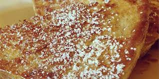

Caramelized French Toast

Description
Recipe for making caramelized french toast! This recipe will yield 8 servings.
Ingredients
- 4 tablespoons butter, divided
- 6 eggs
- 1/2 cup milk
- 1/8 teaspoon salt
- 8 slices bread
- 1 cup brown sugar
- 1/2 cup water
Steps
- Melt two tablespoons of butter in a frying pan or skillet over medium high heat.
- Beat together eggs, milk and salt. Dip bread one at a time into egg mixture and fry until light brown and egg is cooked.
- After 4 slices of bread have been cooked, melt remaining 2 tablespoons butter. Cook remaining bread slices until light brown on both sides and egg is cooked.
- After all bread slices have been cooked and removed from pan, add brown sugar to pan. Stir until melted and sticky. Add water and stir. Place French toast in caramel sauce. Turn to coat, then remove from pan. Serve.